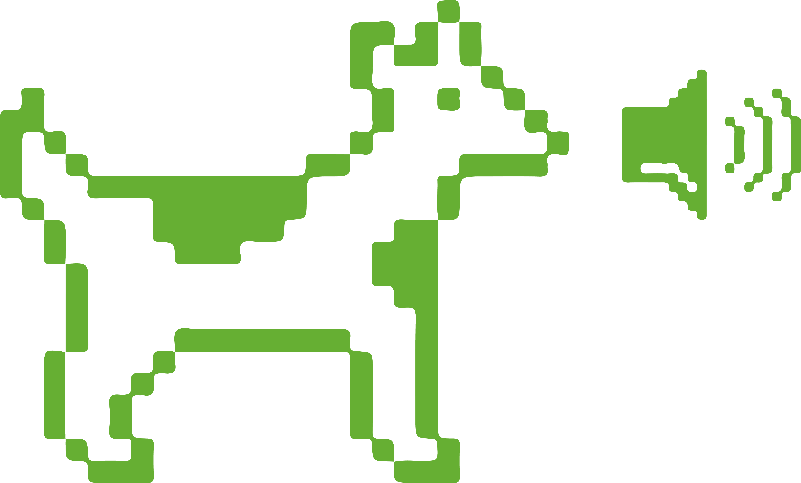
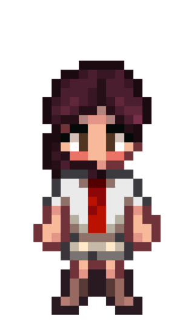

Pixel art originated in computer graphics and was initially limited
by the low resolution and color capacity of early digital
technologies. Over time, it evolved into a cross-media design style
that remains widely used and popular in art and design.
Research Statement
This research explores how pixel art continues to influence areas such
as game interfaces, typefaces, branding, and installation art, focusing
on its historical evolution, aesthetic features, and cultural meaning.
It also examines how this style, through its simplified visual structure,
achieves a balance between visual expression and clear information delivery.
While pixel art is often associated with nostalgia, its continued
vitality in today’s high-resolution digital era stems from more than
sentiment. Its ability to inspire creative freedom through constraint
offers valuable insights for contemporary visual culture and
digital design practice.

← scroll →
About

Pixel aesthetics have influenced me since childhood, whether through pixel games or animations, and they hold significant meaning for me. Therefore, this Almanac compiles my research and analysis on pixel art from the first semester of 2025 in the design research subject at the University of Melbourne
First, I established a research question: Pixel art originated from the limitations of early digital technology. Why is the pixel style still widely used in the high-resolution era?
Then I explored the technical definition and historical development of pixels through 10 entries, discovering that pixels are a conscious aesthetic choice. Their continued popularity is not merely due to nostalgia but because they possess a strong sense of order and adaptability in visual expression. It convey clear information using the smallest units while stimulating viewers' imagination and sense of participation, making them widely applied in games, interfaces, typography, and contemporary design, thereby becoming a visually enduring language.
Furthermore, I selected three terms related to pixel art and fifteen images to further analyse its role and significance in different contexts.
‘Games’ is the most well-known application of pixel art. Therefore, I selected five representative games in chronological order to demonstrate how games beyond pixel games have evolved over the years while carrying players' emotional memories and collective experiences.
‘Grid system’ is the underlying structure that enables pixel art. The composition of pixel images relies on strict grid arrangements. This structural logic is also widely applied in graphic design, whether in posters, books, or branding, where grids help images form clear hierarchies and rhythms within order.
‘Interface’ is another important application of pixel art, so I chose this term. I compared the evolution of modern UI design to explore how to balance simplicity and functionality.
In this book, Zuzana Licko introduces her idea and process in designing the Lo-Res Monospaced typeface. She believes that appropriately sacrificing legibility in typeface can enhance visual expression and create a unique and recognizable graphic language. The typeface is a blend of pixelated styles and abstract structures, with letterforms that are closer to woven patterns than to traditional text. Meanwhile, Licko explains that the design emerged from an accidental discovery during experimentation, emphasizing the openness and exploratory nature of the design process.
This book provides valuable practical support for my research, particularly in exploring how pixel-based typefaces balance graphic expression and information delivery. While reduced legibility can offer more room for visual creativity, such designs may be less suitable in contexts that require high readability and dense information transmission.
2.Smith, Alvy Ray. A Biography of the Pixel. Cambridge: MIT Press, 2021.
In this book, Pixar co-founder Alvy Ray Smith argues that a pixel is a mathematical sample, not a simple square. This means that a pixel is a conceptual unit used to sample image data, rather than a visible graphic element. The process of pixelating an image is not just about adding a visual effect to an existing picture, but about reconstructing the image in a fundamentally different way. Smith also traces the evolution of the pixel, from mosaic to raster graphics, to show how over time and with technological advancement, our ways of seeing have become increasingly modular and discrete. Since my research focuses on how low-resolution images convey information, this book provides important theoretical support for my research.
3.Omagari, Toshi. Arcade Game Typography: The Art of Pixel Type. London: Thames & Hudson, 2019.
Toshi Omagari’s Arcade Game Typography is an important reference for my study of pixel art. The book systematically documents the development of pixel typefaces in arcade games from the 1970s to the 1990s. Through examples from classic games, Omagari shows how different genres used distinct pixelated typefaces to match their visual style. Although these typefaces were often created in very small grids, such as 16×16 pixels, they still display a wide range of visual effects. For example, Super Mario Bros. has a readable typeface with a sense of movement, while Tetris uses a more modular structure that reflects the logic of the game’s tessellations. Overall, this book serves as a valuable visual archive, bringing together pixel typeface design methods from two decades of games, and helping me understand how pixel styles can achieve diverse forms of visual expression even under low-resolution constraints.
4.Preedakorn, Apichart. "The History and Aesthetics of Pixel Art." DEC Journal 3, no. 2 (2024): 95–119.
Preedakorn’s article analyzes how pixel art has evolved beyond its technical origins to become a nostalgic aesthetic movement. The study compares works from two major international art exhibitions: Thailand Biennale Chiang Rai and BIENNALE ARTE. It shows how artists intentionally preserve low resolution, limited color palettes, and other “imperfect” digital traces to evoke collective memories of the early digital age. In today’s image-saturated society, the choice to use pixel art functions as a form of resistance. Through minimal visual elements, artists challenge visual overload and reconstruct digital aesthetics based on the philosophy of “less is more.” This aesthetic proves to be highly adaptive, extending from early video game graphics to web UI, graphic design, and even physical installations. Since my research investigates why pixel aesthetics remain widely used across media, this article offers strong analytical support.
5.Páez, Sergio. "A Visual Renegade: A phenomenological and aesthetical examination of pixel art." Vrije University Amsterdam, 2022.
In this article, Colombian researcher Sergio Páez explores the cultural and aesthetic significance of pixel art in contemporary design and analyzes its interaction with viewers. Páez argues that the deliberate visual incompleteness of pixel art, caused by technological limitations, encourages viewers to actively engage their imagination and personal experiences in interpreting the artwork. Such interaction shifts the audience's role from passive receivers to active participants, enhancing immersion and emotional resonance. Overall, this text is significant for my research as it provides theoretical insights into how visual ambiguity in pixel art fosters viewer participation and helps explain why audiences form strong emotional connections with pixel-based visuals.
6.Emma Grahn. "A Study in GUI Aesthetics for Modern Pixel Art Games." Bachelor’s thesis, Linnaeus University, 2021.
In her thesis, Grahn discusses how graphical user interfaces (GUIs) in modern pixel art games contribute to overall game aesthetics while maintaining visual clarity. She argues that successful pixel-style UI design should align with the game's overall visual language and ensure quick information recognition and usability. Grahn critiques the horror game Lone Survivor, noting that while its text and icons strictly follow a low-resolution pixel style, the lack of color contrast with the background makes the interface difficult for players to read. Based on this case, she further emphasizes that modern pixel game designers must carefully balance nostalgic aesthetics with functionality, warning against sacrificing readability for retro appeal. Her research provides a valuable analytical perspective, helping me understand how pixel art design in contemporary contexts navigates the relationship between stylistic form and user experience.
7.Zuo, Cixuan, and Luo Shibao. "Aesthetic Characteristics and Cultural Expression of Pixel Art." Fine Arts Literature, no. 11 (2024): 4–6. DOI: 10.16585/j.cnki.mswx.2024.11.038.
This article mainly explores the main aesthetic characteristics of pixel art. The authors believe that the aesthetic characteristics of pixel art are mainly reflected in three aspects: First, the design needs to strictly follow the rules of the grid system, even if the elements are complex and changeable, they must maintain the order and structure of the arrangement. Moreover, pixel art breaks through the single transition mode of traditional art and creates richer visual effects through techniques such as uniform monochrome and multi-color mixing. Designers need to carefully select transition methods according to the structure and perspective relationship of works. Finally, the authors prove that the visual elements of pixel art, such as color, shape and layout, have a direct emotional evoking function and can arouse the audience's resonance by analyzing the facial makeup pixel paintings. These features together constitute the unique aesthetic system of pixel art, which enables pixel art to show creativity despite technical limitations.
8.Ma, Xiao. "Design and Application of Traditional Auspicious Cultural Patterns Based on Pixel Art Style." Daguan, no. 9 (September 2023): 3–6. DOI: CNKI:SUN:DAGN.0.2023-09-001.
The key reason why pixel art is still popular today is its excellent cross-field adaptability and unique cultural inclusiveness. Through in-depth analysis of the fusion design of pixel art and traditional folk patterns, Ma's research reveals the core logic of this art form. It is necessary to follow the grid systems of pixel art to abstract geometric refinement of traditional patterns. Furthermore, it requires thorough research into the historical background and symbolic meaning of motifs to avoid distorting their cultural essence due to pixelation. This research result not only provides methodological support for the modernization innovation of traditional patterns, but also opens up new possibilities for the innovative application of pixel art in the field of brand IP shaping, UI interface optimization, Logo creative design and other contemporary design fields.
9.Lyon, Richard F. A Brief History of ‘Pixel.’ SPIE, 2006.
As the basic unit of digital image construction, the concept of pixel has a direct impact on the expression of contemporary visual culture. In this 2006 paper, Lyon traces the historical origins of the term "pixel." Originally, "pixel" was used to describe the visual units in space probe images; By the 1980s, as digital technology advanced, it gradually became the standard way of constructing images and glaid the foundation for pixel-based visual style. It is in this context that pixel art has developed, and its aesthetic characteristics are essentially a creative response to the limitations of early digital imaging technology.
10.Samuelson, Gustav. "Pixel Art - The Medium of Limitation: A Qualitative Study on How Experienced Artists Perceive the Relationship Between Restrictions and Creativity." Bachelor’ s thesis, Umeå University, 2020.
Originally published in 1999, Gustav Samuelson's academic paper "Pixel Art – The Medium of Limitation" explores why pixel art, despite being based on outdated technology, has evolved into an independent art form. By interviewing four pixel artists, Samuelson points out that although early computer hardware limited pixel art in terms of color and shape representation, its grid-based structure made it easier to learn and highly inclusive. As a result, pixel art has continued to grow and gain popularity today. Overall, the article addresses the question of why pixel art is still worth pursuing in the contemporary era. However, it should be noted that all four interviewees came from the same artistic community, which may have limited the diversity of perspectives in the study’s conclusions.
The British Museum. 1928. The Royal Game of Ur Game Board. Wood, 2.40 x 30.10 x 5.70 cm. The British Museum, London.
As the ninth art, the form of gaming has evolved over time, but its essence has
remained the same. From the emergence of board games in the third millennium B.C. to today's video games and virtual reality, games have always been a tool for
humans to explore the unknown and connect with each other.
One of the world's earliest games, the Royal Game of Ur, is a competitive two-player
strategy board game in which players use pieces to move along a specific route on a
wooden board inlaid with shells. The board game was not only entertaining but was
also imbued with spiritual significance. As players believed that the squares on which
the pieces rested could predict future destinies, exemplifying the strong connection
between the game and mankind's quest for the unknown.
In the 19th century, games as a medium for human exploration of the unknown were reinforced through
the Ouija board. Figure 2 shows the lid of a Ouija board from 1915-1918. The player
places their finger on the indicator and waits for it to move across the letter board, spelling out "Messages from the Spirit World." Through it, the player communicates
with spirits and seeks comfort in the loss of a loved one.
Auckland War Memorial Museum. 2015. Gallipoli in Minecraft
Exhibition. Photograph. Best Awards.
As technology advanced, games changed. Designers started making virtual worlds in video games. As Jesper
Juul says in Half-Real, "The appeal of video games lies in their precarious position
between the real and the fictional" (Juul 2011). Minecraft, for example, lets players
build virtual worlds using cubes. These cubes, while like real-world objects, are
different and change how humans relate to virtual space. Players can create endless
possibilities and explore the lines between the real and virtual worlds.
Gisling. 2008. Mahjong in Tianyi Chamber. Photograph. The Tianyi museum, Ningbo.
The previous examples show how games can satisfy human curiosity about the
unknown. However, games are not only a tool for exploring the unknown, but they
also provide a platform for people to socialize. Mahjong in Figure 4 is a typical
example. Originating in the late Qing Dynasty, this game was initially used as an
entertainment tool at parties and gradually evolved into an important medium for
family members to establish contact with each other. In Mahjong, players gain
information from their opponents' tiles through observation, memory, and reasoning
in order to surmise the overall situation of the current hand. As Toshi Omagari points
out in Arcade Game Typography, "The game is not just a purely visual experience; it
is also a process of making connections through visual symbols" (Omagari 2019). The
characters and circular symbols construct the rules of the game and become cultural
symbols for players' social interactions.
Dmytro, Ostapchuk. 2025. “The most Expensive CS Cases - May 2025”. EGamersWorld. September 24.
However, games like this, which have a
gambling nature, while satisfying human curiosity about unknown outcomes, can
trigger addiction and even financial crises. For instance, CS:GO's chest-opening
system, players buy "chests" and open them to obtain rare virtual items. Through
this mechanism, players invest time and money in pursuit of virtual rewards, while
their perception of risk is distorted.
These images shows the diversity of game forms and their evolution through time
and culture, highlighting how games help people connect with each other and
understand the unknown. However, gambling mechanics in modern games can
negatively impact players. Game design needs to give more consideration to its
long-term effects on players' psychology and behavior, and find a balance between
entertainment and responsibility in order to better harness the positive role of
games as a means of connecting people and exploring the unknown.
Game Entry 1
This is the detailed content for Game Entry 1.
Game Entry 2
This is the detailed content for Game Entry 2.
Game Entry 3
This is the detailed content for Game Entry 3.
Game Entry 4
This is the detailed content for Game Entry 4.
Game Entry 5
This is the detailed content for Game Entry 5.
Grid System
Muller-Brockmann, Josef. 1960. Musica Viva. International
Poster Gallery
The grid system has both advantages and limitations in graphic design. The
International Typographic Style, which originated in Switzerland and Germany in the
1950s, emphasized the use of the grid system. In Aesthetic Characteristics and
Cultural Expression of Pixel Art, Zuo and Luo demonstrate: "Designs need to strictly
follow the rules of the grid system, even if the elements are complex and changeable, the order and structure must be maintained(Zuo and Luo 2024)." This reflects the
main advantage of the grid system: it is able to transform complex designs from
disorder to order. For example, Josef Müller-Brockmann's 1960 poster for the Zurich
Concert Hall uses a 4.5x4 grid system, which creates a visual rhythm through the
criss-crossing of the letters of the word 'musica'. At the same time, the words' meaning echoes the theme of the poster, creating a feeling of rigor and
elegance—typical of Swiss International Style design.
Neuburg, Hans. 1965. Graphic Design in Swiss Industry. 25 x
25.5 cm. ABC Verlag.
In Graphic Design in Swiss Industry, Hans Neuburg used a 12 colomns to help balance
text and images, enabling complex information, such as product parameters, to be
communicated efficiently. The grid system ensures a hierarchical relationship
between images and text, avoids overloading the information, and enhances clarity. The viewer is first attracted to the zebra image and then their eye naturally shifts to
the product information. The use of the grid ensures visual fluidity and smooth
information transfer. At the same time, the red color is used to highlight the word
'Zebra', and this simple design not only maintains the functionality of the
advertisement but also enhances its message.
Pentagram. 2014. Visual identity for MIT Media Lab. Pentagram, New York.
The grid system is widely used in branding, as seen in Figure 8, where
the MIT Media Lab logo, designed by the Pentagram team, ensures the precise
alignment of the letter combinations through a 7x7 grid. This grid system is extended
to 23 research groups, allowing the MIT Media Lab's brand identity to be unified and
continuous. The grid system in branding demonstrates its functionality and flexibility, expanding the use of the logo in different contexts while maintaining a consistent
visual identity
Weingart, Wolfgang. 1962. 10 Weingart. Museum für
Gestaltung Zürich.
However, there are limitations to the grid system. An overly regular grid can result in
a lack of recognizability, limiting creative expression.Therefore Wolfgang Weingart's
American "New Wave" work deconstructs the traditional grid system to create more
dynamic typography. In this poster, the arrangement of words and glyphs is
randomly distributed, and the angles and sizes of the letters do not follow the
traditional grid or symmetry, creating visual chaos. Although Weingart was
influenced by the Swiss Internationalist style, this poster reflects his personal
emotional expression.
Weingart, Wolfgang. 1981. Didacta Eurodidac. Museum für
Gestaltung Zürich.
Weingart further broke the grid through collage
and photomontage techniques, layering photographed images and text while
combining graphics, text, and photographs. Although there are still grid elements in the poster, such as straight lines and dotted patterns in the background, the overall
design is full of randomness and vigor, with images and text no longer aligned.
Interface
Lauren Wong. 2024. iOS: The User Interface Design Journey. SUSHLABS.
The interface consists of a graphical user interface (GUI), a voice-controlled interface
(VUI), and a gesture-controlled interface, all of which provide ways for the user to
interact with the computer while conveying the brand's personality.
Firstly, as seen in Figures 11 and 12, the GUI designs for iOS and Windows are
completely different. Apple's user interface initially used an anthropomorphic design, adding shadows to app buttons to give them a 3D effect, suggesting clickable
interactions. It wasn’t until 2013 that Apple introduced flat design in iOS 7, removing
shadows in favor of solid colors and rounded borders, focusing on simplicity and
abstraction. Jon Ive spoke about these changes, saying, “We understand that people
are used to touching glass; they don’t need physical buttons, and they understand
the benefits of doing so... So there’s incredible freedom in not adding shadows and
bezels, and going flat in iOS 7. We have the incredible freedom of not having to refer
to the physical world so literally... to create a less concrete environment.(Jon Ive
2013)” This shift resulted in a cleaner, simplified iOS interface with icons, buttons, and menus that highlight core functionality while easing the cognitive burden on
users. The design creates a smoother experience in line with Apple's premium and
innovative brand image.
Howie Baum. 2023. “AN INTRODUCTION TO THE WINDOWS 10 COMPUTER
OPERATING SYSTEM”. Osher Lifelong Learning Institute. May 9.
In contrast, Windows 10 is often associated with a powerful, professional brand
image. Designers retained the traditional menu structure but introduced Live Tiles, which display dynamic information from apps like Mail and Weather in real time, enhancing the immediacy of information. As Emma Grahn notes in A Study in GUI
Aesthetics for Modern Pixel Art Games, “Ensuring rapid recognition of information
delivery and interface usability.(Grahn 2021)” This principle is evident in both iOS
and Windows 10, with both designs prioritizing fast information processing and
efficient navigation, enabling users to interact with the interface quickly and
effectively.
Jan Nikka A. Estefani. 2024. “How Leading Brands Are Using Voice User Interfaces: Insights and Learnings”. Raw Studio. June 27.
Moreover, VUI is another critical aspect of interface design, as it conveys brand
personality through voice feedback and tone. Figure 13 shows Alexa, Amazon’s
intelligent voice assistant, which adopts a natural and friendly tone, making users
feel comfortable and reinforcing Amazon’s brand image of being “smart” and
“efficient.”
Stella Nolan. 2025. “Top 10: Voice Assistants”. Mobile magazine. April 23.
In contrast, Xiaoxia demonstrates Xiaomi's youthfulness and
approachability through its lively and playful voice style, connecting with users
emotionally through dialects and slang.
Heidi Kemps. 2014. “Wii Sports Club Review”. Gamesport.
The last type of interface is the gesture-based interface, which eliminates traditional
remotes and buttons. Somatosensory games like Wii Sports allow players to interact
with the game through gestures, emphasizing an active and healthy lifestyle and encouraging players to "get hands-on." However, gesture recognition requires a high
degree of accuracy, and inevitable errors can affect the smoothness and enjoyment
of the game.
In conclusion, these three types of interface designs play an important role in
conveying brand emotions and reinforcing brand image through their respective
unique interactive approaches.
Bibliography
Buster, Hein. 2013. “Jony Ive Explains Why He Decided To Gut Skeuomorphism From iOS 7.” Cult of MAC, September 19. https://www.cultofmac.com/news/jony-ive-explains-why-he-decided-to-gut-skeuomorphism-out-of-ios
Grahn, Emma. "A Study in GUI Aesthetics for Modern Pixel Art Games." Bachelor’s thesis, Linnaeus University, 2021. https://www.diva-portal.org/smash/record.jsf?pid=diva2%3A1558330
Juul, Jesper. 2011. Half-Real: Video Games between Real Rules and Fictional Worlds. MIT Press
Academic.
Lyon, Richard F. "A Brief History of ‘Pixel.’" SPIE, 2006. https://www.dicklyon.com/tech/Photography/Pixel-SPIE06-Lyon.pdf
Ma, Xiao. "Design and Application of Traditional Auspicious Cultural Patterns Based on Pixel Art Style." Daguan, no. 9 (September 2023): 3–6. DOI: CNKI:SUN:DAGN.0.2023-09-001.
Omagari, Toshi. Arcade Game Typography: The Art of Pixel Type. London: Thames & Hudson, 2019.
Páez, Sergio. "A Visual Renegade: A Phenomenological and Aesthetical Examination of Pixel Art." Vrije University Amsterdam, 2022. https://www.researchgate.net/publication/364657501_A_Visual_Renegade_A_phenomenological_and_aesthetical_examination_of_pixel_art
Preedakorn, Apichart. "The History and Aesthetics of Pixel Art." DEC Journal 3, no. 2 (2024): 95–119. https://so07.tci-thaijo.org/index.php/decorativearts-Journal/article/view/5293
Samuelson, Gustav. "Pixel Art — The Medium of Limitation: A Qualitative Study on How Experienced Artists Perceive the Relationship Between Restrictions and Creativity." Bachelor’s thesis, Umeå University, 2020. https://www.diva-portal.org/smash/record.jsf?pid=diva2%3A1518210&dswid=-5609
Smith, Alvy Ray. A Biography of the Pixel. Cambridge: MIT Press, 2021.
Zuo, Cixuan, and Luo Shibao. "Aesthetic Characteristics and Cultural Expression of Pixel Art." Fine Arts Literature, no. 11 (2024): 4–6. DOI: 10.16585/j.cnki.mswx.2024.11.038.
List of figures
Fig. 1. The British Museum. 1928. The Royal Game of Ur Game Board. Wood, 2.40 x 30.10 x 5.70 cm. The British Museum, London. https://www.britishmuseum.org/collection/object/W_1928-1009-378?selectedImageId=129381001
Fig. 3. Auckland War Memorial Museum. 2015. Gallipoli in Minecraft Exhibition. Photograph. Best
Awards. https://bestawards.co.nz/spatial/exhibition-temporary-structures/jasmax/gallipoli-in-minecraft-e
xhibition-at-auckland/
Fig. 4. Gisling. 2008. Mahjong in Tianyi Chamber. Photograph. The Tianyi museum, Ningbo. https://commons.wikimedia.org/w/index.php?curid=9752400
Fig. 5. Dmytro, Ostapchuk. 2025. “The most Expensive CS Cases - May 2025”. EGamersWorld. September 24.https://egamersworld.com/blog/the-most-expensive-cs-cases-this-date--orngPIah
Fig.6. Muller-Brockmann, Josef. 1960. Musica Viva. International Poster Gallery. https://www.internationalposter.com/product/musica-viva-blue/
Fig.7. Neuburg, Hans. 1965. Graphic Design in Swiss Industry. 25 x 25.5 cm. ABC Verlag. https://page-spread.com/graphic-design-in-swiss-industry-b/
Fig.8. Pentagram. 2014. Visual identity for MIT Media Lab. Pentagram, New York. https://www.pentagram.com/work/mit-media-lab/story
Fig.9. Weingart, Wolfgang. 1962. 10 Weingart. Museum für Gestaltung Zürich. https://www.typographicposters.com/wolfgang-weingart/594953641abbcb141757b54d
Fig.10. Weingart, Wolfgang. 1981. Didacta Eurodidac. Museum für Gestaltung Zürich. https://chriskeno.github.io/wolfgang-weingart-essay/wolfgang-weingart-essay.html
Fig.11. Lauren Wong. 2024. iOS: The User Interface Design Journey. SUSHLABS. https://www.sushlabs.com/blog/ios-the-ui-design-journey
Fig.12.Howie Baum. 2023. “AN INTRODUCTION TO THE WINDOWS 10 COMPUTER OPERATING SYSTEM”. Osher Lifelong Learning Institute. May 9.https://www.uc.edu/content/dam/refresh/cont-ed-62/olli/fall-23-class-handouts/refined%20word.pdf
Fig.13.Jan Nikka A. Estefani. 2024. “How Leading Brands Are Using Voice User Interfaces: Insights and Learnings”. Raw Studio. June https://raw.studio/blog/how-leading-brands-are-using-voice-user-interfaces-insights-and-learnings/
Fig.14. Stella Nolan. 2025. “Top 10: Voice Assistants”. Mobile magazine. April https://mobile-magazine.com/top10/top-10-voice-assistants
Fig.15. Heidi Kemps. 2014. “Wii Sports Club Review”. Gamesport. https://www.gamespot.com/reviews/wii-sports-club-review/1900-6415837/